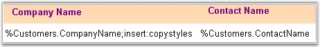
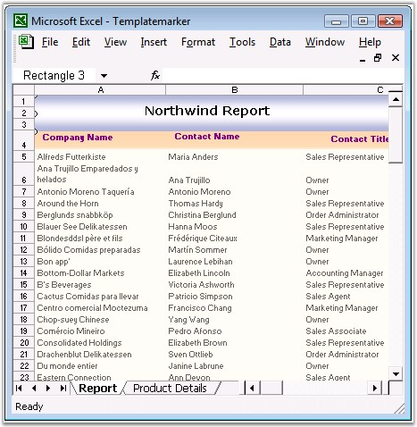
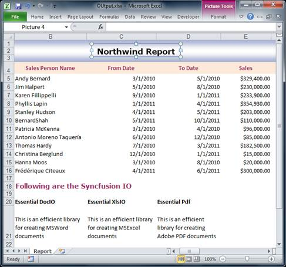
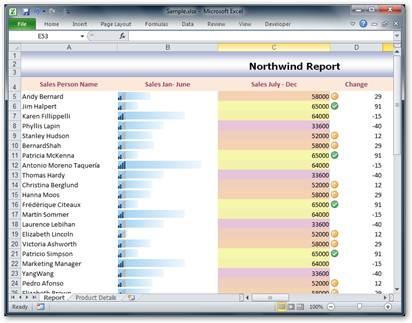

This is another variant of the Template based approach, but the difference is that the end-user places special markers in the template spreadsheet, which gets replaced along with the data during runtime. The main advantage of this approach is that the end-user gets the flexibility of designing the Excel report.
Cells in the worksheet can be filled with single data or with multiple records. Format of these data can be changed by using the arguments of the markers.
Marker Syntax
Each marker starts with some prefix, by default it is "%" character, and followed by the variable name and properties. There could be several arguments after the variable, which are delimited by some character, by default it is semicolon (;).

Figure 135: Template Marker
Source
XlsIO can be used to bind various data sources to these markers. This includes data sources such as Data Table, Data Set, Data Reader, Data View, Array, Variable and Formulas.
Arguments
You can specify the following arguments in the marker to customize the worksheet.
· Horizontal-This argument specifies the horizontal direction of the data import for complex variables.
· Vertical-This argument specifies the vertical direction of the data import for complex variables.
· Insert-This argument inserts new rows or columns, depending on the direction argument for each new cell. Note that by default, the rows cannot be added.
· insert:copystyles-This argument copies styles from the above row or left column.
· jump:[cell reference in R1C1 notation]-This argument binds the data to the cell at the specified reference. Cell reference addresses can be relative or absolute.
· copyrange:[top-left cell reference in R1C1]:[bottom-right cell reference in R1C1]-Copies the specified cells after each cell import.
Here is the sample after dynamically filling the data during runtime.

Figure 136: Template showing Markers replaced by Data using XlsIO
The unique advantage of this approach is that the end-user can have customized reports without modifying the source code of the report generating application.
Following code example illustrates how to bind the data from a data table, array and formula, to a marker.
|
[C#]
// Create Template Marker Processor. // Northwind Customers Table ITemplateMarkersProcessor marker = workbook.CreateTemplateMarkersProcessor(); marker.AddVariable("Customers", northwindDt);
// Insert Array Horizontally. string[] names = new string[] { "Mickey", "Donald", "Tom", "Jerry" }; string[] descriptions = new string[] { "Mouse", "Duck", "Cat", "Mouse" }; marker.AddVariable("Names", names); marker.AddVariable("Descriptions", descriptions);
// Stretch Formula marker.AddVariable("NumbersTable", numbersDt);
// Process the markers in the template. marker.ApplyMarkers(); |
|
[VB.NET]
' Create Template Marker Processor. ' Northwind Customers Table Dim marker As ITemplateMarkersProcessor = workbook.CreateTemplateMarkersProcessor() marker.AddVariable("Customers",northwindDt)
' Insert Array Horizontally. Dim names As String() = New String() {"Mickey", "Donald", "Tom", "Jerry"} Dim descriptions As String() = New String() {"Mouse", "Duck", "Cat", "Mouse"} marker.AddVariable("Names",names) marker.AddVariable("Descriptions",descriptions)
' Stretch Formula marker.AddVariable("NumbersTable",numbersDt)
' Process the markers in the template. marker.ApplyMarkers() |
Here, CreateTemplateMarkerProcessor returns the ITemplateMarkersProcessor interface, which creates and manipulates the marker data. ApplyMarkers method of ITemplateMarkersProcessor is the special method that processes the markers in the template.
You can also specify the marker by using the following code.
|
[C#]
// Insert Simple marker. sheet.Range["B2"].Text = "%Marker";
// Insert marker which gets value of Author name. sheet.Range["C2"].Text = "%Marker2.Worksheet.Workbook.Author";
// Insert marker which gets cell address. sheet.Range["H2"].Text = "%ArrayProperty.Cells.Address";
ITemplateMarkersProcessor marker = workbook.CreateTemplateMarkersProcessor(); marker.AddVariable("Marker", "First test of markers"); marker.AddVariable("Marker2", sheet.Range["B2"]); marker.AddVariable("ArrayProperty", sheet.Range["B2:G2"]);
// Process the markers in the template. marker.ApplyMarkers(); |
|
[VB.NET]
' Insert Simple marker. sheet.Range("B2").Text = "%Marker"
' Insert marker which gets value of Author name. sheet.Range("C2").Text = "%Marker2.Worksheet.Workbook.Author"
' Insert marker which gets cell address. sheet.Range("H2").Text = "%ArrayProperty.Cells.Address"
Dim marker As ITemplateMarkersProcessor = workbook.CreateTemplateMarkersProcessor() marker.AddVariable("Marker", "First test of markers") marker.AddVariable("Marker2", sheet.Range("B2")) marker.AddVariable("ArrayProperty", sheet.Range("B2:G2"))
' Process the markers in the template. marker.ApplyMarkers() |
You can also create charts from the data that is bound at runtime by using the marker.
Refer
How to Create Template Markers using XlsIO for more
details:
Detect Data Type and Number Formats
XlsIO now supports detecting the data type and applying the number format to the Template marker.
The following is the sample after dynamically detecting and applying data type and number format.

|
[C#]
//Create Template Marker Processor ITemplateMarkersProcessor marker = workbook.CreateTemplateMarkersProcessor(); //Northwind customers table marker.AddVariable("Customers", northwindDt, VariableTypeAction.DetectNumberFormat); //Process the markers and detect the number format along with the data type in the template. marker.ApplyMarkers(); |
|
[VB.NET]
'Create Template Marker Processor Dim marker As ITemplateMarkersProcessor = workbook.CreateTemplateMarkersProcessor() 'Northwind customers table marker.AddVariable("Customers", northwindDt, VariableTypeAction.DetectNumberFormat) 'Process the markers and detect the number format along with the data type in the template. marker.ApplyMarkers() |
The following table gives the list of enumerations available:
|
Enum |
Description |
|
DetectDataType |
Detects the DataType of the marker variable |
|
DetectNumberFormat |
Detects both the NumberFormat and DataType of the marker variable |
|
None |
Represents the ‘None’ action |
Template Marker with Conditional Formatting
XlsIO allows the CreateConditionalFormat method in the ITemplateMarkerProcessor to dynamically apply the conditional format. It then creates or applies the conditional format to the template marker range dynamically.
Here is the sample for dynamically applied conditional format to data, during runtime.

Figure 102: Dynamically applied conditional format to data (during runtime)
The following code snippet illustrates how to create or apply conditional format to the Marker.
|
[C#]
ITemplateMarkersProcessor marker = workbook.CreateTemplateMarkersProcessor(); IConditionalFormats conditions = marker.CreateConditionalFormats(sheet["D3"]); IConditionalFormat condition = conditions.AddCondition(); condition.FormatType = ExcelCFType.IconSet; condition.IconSet.IconSet = ExcelIconSetType.ThreeFlags; |
|
[VB]
marker = workbook.CreateTemplateMarkersProcessor() Dim conditions AsIConditionalFormats = marker.CreateConditionalFormats(sheet("D3")) Dim condition AsIConditionalFormat = conditions.AddCondition() condition.FormatType = ExcelCFType.IconSet condition.IconSet.IconSet = ExcelIconSetType.ThreeFlags |
For More Information Refer:
AutoFilters, Validating Data, Template Markers, Grouping and Ungrouping